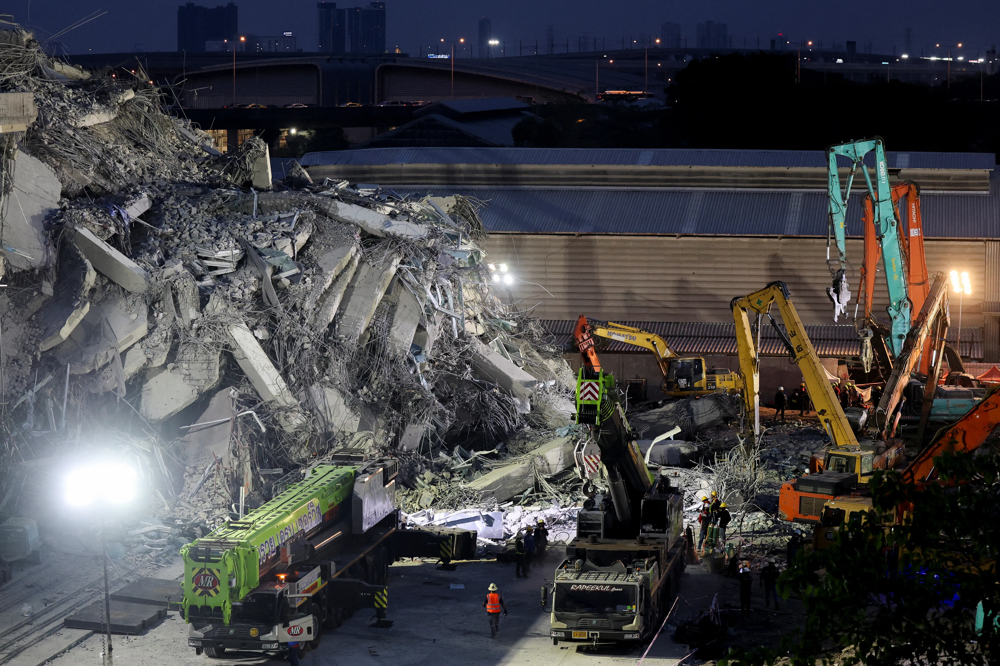
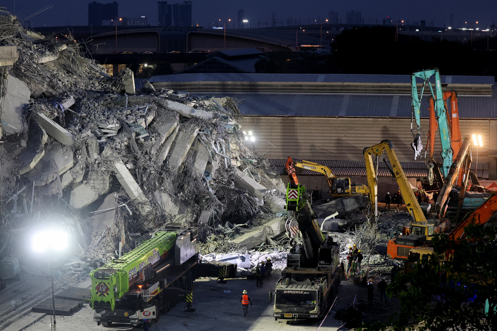

ISRO’s CARTOSAT-3 Captures Myanmar Earthquake Destruction
Published: April 1, 2025 | 01:42 PM
ISRO’s High-Resolution Satellite Images of Myanmar Earthquake
ISRO’s
CARTOSAT-3
satellite has released high-resolution images showing the aftermath of the devastating 7.7 magnitude earthquake that struck Myanmar on March 28, 2025. These satellite images have provided crucial insights into the extent of the damage, including collapsed buildings, damaged infrastructure, and areas severely affected by ground ruptures.
Key Areas Affected by the Earthquake
The earthquake’s epicenter was located near the
Sagaing-Mandalay border,
and the images show widespread damage in cities such as Mandalay and Naypyidaw, as well as rural regions in northern Myanmar. Key structures including historic pagodas, government buildings, and bridges have been destroyed or severely damaged, particularly in Mandalay.
Destruction of Infrastructure
The satellite images reveal the collapse of the
Ava Bridge,
one of the most iconic structures in Myanmar, along with severe damage to roads, schools, and hospitals. Significant ground ruptures and signs of liquefaction have been captured, which indicate the strength of the seismic activity.
Humanitarian Impact
Over 2,000 lives have been lost, with thousands more injured and displaced. The satellite imagery has been instrumental in aiding rescue teams, providing detailed maps of the most affected areas. It has enabled quick identification of critical locations that need immediate attention.
Global Aid and Response
The images captured by
CARTOSAT-3
have been shared with international aid organizations, governments, and emergency teams to coordinate disaster response efforts. The use of space technology has proven vital in supporting relief operations, especially in areas that are hard to access due to infrastructure damage.
ISRO’s Role in Disaster Management
ISRO continues to play a critical role in disaster management through its space-based technologies, which help mitigate the impact of such natural calamities. The CARTOSAT-3 satellite, with its high-resolution imaging capability, will continue to monitor the situation in the coming days, providing up-to-date information to relief teams and assisting in rebuilding efforts.
Future Monitoring
ISRO is planning to use its other satellites to track the evolving situation in Myanmar, providing crucial data on the ongoing humanitarian crisis and damage assessment. The data gathered will also contribute to future disaster preparedness efforts in the region.